ネフォンクリーチャー 一覧 (2026版)
| N ノーマル | ||||||||||
|---|---|---|---|---|---|---|---|---|---|---|
| アイコン | クリーチャー名 | Type | メインパッシブ | サブパッシブ1 | サブパッシブ2 | サブパッシブ3 | 説明 | 立ち絵 | 図鑑 | 備考 |
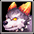 |
ブリード火炎犬 | 力 | 攻撃力 Lv 8 |
経験値 Lv 4 |
体力吸収 Lv 4 |
- | 人間の手で飼育された火炎犬。野生は失ったが、種族独特の炎は変わらず強い。 | 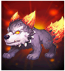 |
図鑑1 | |
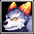 |
青の火炎犬 | 力 | ドロップ率 Lv 8 |
回避率 Lv 4 |
ドロップ率 Lv 4 |
- | 山岳地帯で育った元気な火炎犬。人間が近づくと、口から青色の炎を吹き出す。 | 図鑑1 | ||
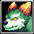 |
緑の火炎犬 | 知識 | 火低下 Lv 8 |
被ダメージ反射 Lv 4 |
火強化 Lv 4 |
- | 山岳地帯で育った元気な火炎犬。人間が近づくと、口から緑色の炎を吹き出す。 | 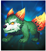 |
図鑑1 | |
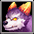 |
紫の火炎犬 | 知識 | 火抵抗力 Lv 8 |
火強化 Lv 4 |
抵抗力低下防止 Lv 4 |
- | 山岳地帯で育った元気な火炎犬。人間が近づくと、口から紫色の炎を吹き出す。 | 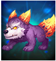 |
図鑑1 | |
| 灰の火炎犬 | 健康 | 最大CP Lv 8 |
能力値低下防止 Lv 4 |
最大体力 Lv 4 |
- | 山岳地帯で育った元気な火炎犬。人間が近づくと、口から灰色の炎を吹き出す。 | 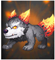 |
図鑑1 | ||
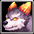 |
赤の火炎犬 | 健康 | 攻撃力 Lv 8 |
攻撃力 Lv 4 |
動物型ダメージ Lv 4 |
- | 山岳地域で育った元気な火炎犬。人間が近づくと、口から赤色の炎を吹き出す。 | 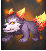 |
図鑑1 | |
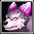 |
紫の閃光犬 | サポート | クリティカル確率 Lv 8 |
クリティカルダメージ Lv 4 |
スキル Lv 4 |
- | 砂漠地帯で育った元気な閃光犬。人間が近づくと、口から紫色の炎を吹き出す。 | 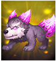 |
図鑑1 | |
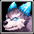 |
水色の閃光犬 | サポート | 最大体力 Lv 8 |
防御力 Lv 4 |
体力吸収 Lv 4 |
- | 砂漠地域で育った元気な閃光犬。人間が近づくと、全身から水色の炎を吹き出す。 | 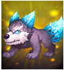 |
図鑑1 | |
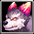 |
赤の閃光犬 | サポート | 火強化 Lv 8 |
神獣型ダメージ Lv 4 |
水低下 Lv 4 |
- | 砂漠地域で育った元気な閃光犬。人間が近づくと、全身から赤色の炎を吹き出す。 | 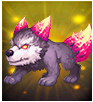 |
図鑑1 | |
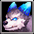 |
青の閃光犬 | 力 | 大地抵抗力 Lv 8 |
クリティカルダメージ減少 Lv 4 |
火抵抗力 Lv 4 |
- | 砂漠地域で育った元気な閃光犬。人間が近づくと、全身から青色の炎を吹き出す。 | 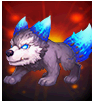 |
図鑑1 | |
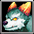 |
変異火炎犬 | 力 | ペット&召喚獣強化 Lv 8 |
ペット&召喚獣体力 Lv 4 |
ペット&召喚獣全てのステータス Lv 4 |
- | 火炎犬と閃光犬から生まれた変種の火炎犬。全身に強い炎をまとっている。 | 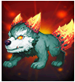 |
図鑑1 | |
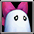 |
乙女ミニゴースト | 知識 | 状態異常抵抗力 Lv 8 |
ドロップ率 Lv 4 |
最大CP Lv 4 |
- | 大きなリボンをつけたミニゴースト。人間の笑顔が好き。軽やかな動きが印象的だ。 | 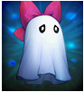 |
図鑑1 | |
| 海ミニゴースト | 知識 | 闇低下 Lv 8 |
全ての属性抵抗 Lv 4 |
闇強化 Lv 4 |
- | 海で生息していたミニゴースト。好奇心旺盛で、船が通ると船員たちにいたずらして驚かせることもある。 | 図鑑1 | |||
| 森ミニゴースト | 知識 | 闇抵抗力 Lv 8 |
闇強化 Lv 4 |
闇低下 Lv 4 |
- | 森の中で生息していたミニゴースト。森で迷った傭兵たちの道案内をしてくれる。 | 図鑑1 | |||
| 崖ミニゴースト | 力 | 攻撃力 Lv 8 |
被魔法ダメージ吸収 Lv 4 |
命中率 Lv 4 |
- | 人影の少ない崖で生息していたミニゴースト。ずっと寂しかったのか、人懐っこい。 | 図鑑1 | |||
| 岩ミニゴースト | 健康 | スキル Lv 8 |
スキル Lv 4 |
最大CP Lv 4 |
- | 岩付近で生息していたミニゴースト。動くのが嫌いで、誰かが近づいても動かずじっとしていることが多い。 | 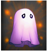 |
図鑑1 | ||
| 砂漠ミニゴースト | 健康 | 回避率 Lv 8 |
火抵抗力 Lv 4 |
移動速度 Lv 4 |
- | 砂漠で生息していたミニゴースト。ラクダの後ろをついて歩くことが好きだけど、よく砂漠の真ん中で迷子になってしまう。 | 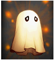 |
図鑑1 | ||
| 滝ミニゴースト | サポート | 闇強化 Lv 8 |
攻撃速度 Lv 4 |
闇低下 Lv 4 |
- | 滝で生息していたミニゴースト。激しい流れに逆らいながら滝を上ることが趣味。 | 図鑑1 | |||
| 平原ミニゴースト | サポート | 最大体力 Lv 8 |
クリティカルダメージ減少 Lv 4 |
悪魔型ダメージ Lv 4 |
- | 平原で生息していたミニゴースト。人間を見かけると、必死に驚かそうとするが、毎回失敗している。 | 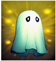 |
図鑑1 | ||
| 紳士ミニゴースト | 知識 | 移動速度 Lv 8 |
被魔法ダメージ吸収 Lv 4 |
攻撃力 Lv 4 |
- | フェルトハットをかぶり、付け髭をつけたミニゴースト。本物の紳士を日々追及している。 | 図鑑1 | |||
| 墓地ミニゴースト | サポート | クリティカル確率 Lv 8 |
水抵抗力 Lv 4 |
クリティカルダメージ Lv 4 |
- | ミニゴーストの中では、自分が一番怖いと勘違いしている。 | 図鑑1 | |||
| 地下ミニゴースト | サポート | 防御力 Lv 8 |
闇抵抗力 Lv 4 |
被ダメージ反射 Lv 4 |
- | 地下で生息していたミニゴースト。臆病で少しの物音でもすぐに隠れてしまう。 | 図鑑1 | |||
| 強欲のゴーレム | 力 | 光抵抗力 Lv 8 |
クリティカル確率 Lv 4 |
光低下 Lv 4 |
- | とても欲張りなグリームゴーレム。他人のモノは俺のモノ、俺のモノも俺のモノ。 | 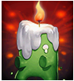 |
図鑑1 | ||
| 忘却のゴーレム | 知識 | 光強化 Lv 8 |
光強化 Lv 4 |
動物型ダメージ Lv 4 |
- | すごく忘れっぽいグリームゴーレム。自分がグリームゴーレムであることすら忘れてしまう。 | 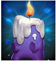 |
図鑑1 | ||
| 貪欲のゴーレム | 知識 | 回避率 Lv 8 |
能力値低下防止 Lv 4 |
光抵抗力 Lv 4 |
- | 欲が深いグリームゴーレム。キャンドルのサイズを大きくするためなら狡い行動だってへっちゃら。 | 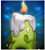 |
図鑑1 | ||
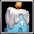 |
祝福のゴーレム | 知識 | 攻撃速度 Lv 8 |
クリティカルダメージ Lv 4 |
防御力 Lv 4 |
- | 祝福をあらわすグリームゴーレム。キャンドルの火を聖なるものとして、とても大事にしている。 | 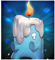 |
図鑑1 | |
| 勇気のゴーレム | 力 | 最大体力 Lv 8 |
最大体力 Lv 4 |
ドロップ率 Lv 4 |
- | 勇気あふれるグリームゴーレム。どんな苦境でも諦めず、キャンドルを立たせて進んでいく。 | 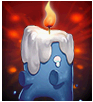 |
図鑑1 | ||
| 正義のゴーレム | 健康 | 経験値 Lv 8 |
大地抵抗力 Lv 4 |
被ダメージ反射 Lv 4 |
- | 正義感の強いグリームゴーレム。仲間がいじめられていると、じっとしていられない。 | 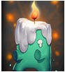 |
図鑑1 | ||
| 不屈のゴーレム | 健康 | 大地抵抗力 Lv 8 |
攻撃力 Lv 4 |
経験値 Lv 4 |
- | 根性強いグリームゴーレム。絶対にキャンドルの火は消えない。絶対に。 | 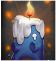 |
図鑑1 | ||
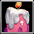 |
幸福のゴーレム | サポート | ペット&召喚獣強化 Lv 8 |
ペット&召喚獣全てのステータス Lv 4 |
ペット&召喚獣攻撃力 Lv 4 |
- | 幸せそうに微笑んでいるグリームゴーレム。キャンドルの火は常に明るい色で、勢いよく燃えている。 | 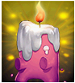 |
図鑑1 | |
| 希望のゴーレム | サポート | 移動速度 Lv 8 |
アンデッド型ダメージ Lv 4 |
体力吸収 Lv 4 |
- | 希望に満ちたグリームゴーレム。みんなで集まって光り出すことが好き。 | 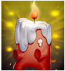 |
図鑑1 | ||
| 憤怒のゴーレム | 力 | 光低下 Lv 8 |
移動速度 Lv 4 |
光強化 Lv 4 |
- | 怒りにとらわれたグリームゴーレム。闇を呪い、キャンドルで光を灯そうとする。 | 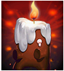 |
図鑑1 | ||
| 復讐のゴーレム | 力 | ドロップ率 Lv 8 |
光抵抗力 Lv 4 |
状態異常抵抗力 Lv 4 |
- | 復讐にとりつかれたグリームゴーレム。キャンドルの火力が強すぎて、身体はどんどん小さくなる。 | 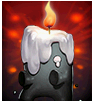 |
図鑑1 | ||
| レビット | サポート | 水強化 Lv 8 |
水低下 Lv 4 |
アンデッド型ダメージ Lv 4 |
- | ペールオレンジ色の可愛いどこにでもいるレビット種。可愛らしい姿で多くの人から愛されている。 | 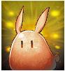 |
図鑑1 | ||
| リビット | サポート | 水低下 Lv 8 |
抵抗力低下防止 Lv 4 |
水強化 Lv 4 |
- | 空色の可愛いレビット種。川岸に生息していた種とされている。可愛らしい姿で多くの人から愛されている。 | 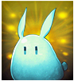 |
図鑑1 | ||
| ルビット | サポート | 水抵抗力 Lv 8 |
回避率 Lv 4 |
被魔法ダメージ吸収 Lv 4 |
- | 灰色の可愛いレビット種。海岸に生息していた種とされている。可愛らしい姿で多くの人から愛されている。 | 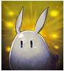 |
図鑑1 | ||
| ロビット | サポート | 最大体力 Lv 8 |
防御力 Lv 4 |
状態異常抵抗力 Lv 4 |
- | 緑色の可愛いレビット種。森に生息していた種とされている。可愛らしい姿で多くの人から愛されている。 | 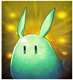 |
図鑑1 | ||
| ブビット | 健康 | 最大CP Lv 8 |
ペット&召喚獣強化 Lv 4 |
水抵抗力 Lv 4 |
- | 紫色の可愛いレビット種。洞窟に生息していた種とされている。可愛らしい姿で多くの人から愛されている。 | 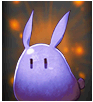 |
図鑑1 | ||
| レイット | 健康 | 水強化 Lv 8 |
水低下 Lv 4 |
スキルクールタイム減少 Lv 4 |
- | コラール色の可愛いレビット種。地下に生息していた種とされている。可愛らしい姿で多くの人から愛されている。 | 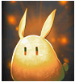 |
図鑑1 | ||
| ルイット | 健康 | ペット&召喚獣全てのステータス Lv 8 |
ペット&召喚獣体力 Lv 4 |
風抵抗力 Lv 4 |
- | 青色の可愛いレビット種。荒野に生息していた種とされている。可愛らしい姿で多くの人から愛されている。 | 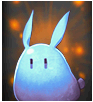 |
図鑑1 | ||
| ロイット | 知識 | 防御力 Lv 8 |
攻撃速度 Lv 4 |
神獣型ダメージ Lv 4 |
- | ピンク色の可愛いレビット種。砂漠に生息していた種とされている。可愛らしい姿で多くの人から愛されている。 | 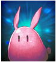 |
図鑑1 | ||
| ライット | 知識 | スキル Lv 8 |
攻撃力 Lv 4 |
防御力 Lv 4 |
- | ライトグリーン色の可愛いレビット種。平野で生息していた種とされている。可愛らしい姿で多くの人から愛されている。 | 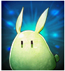 |
図鑑1 | ||
| レビント | 知識 | 水低下 Lv 8 |
水強化 Lv 4 |
被ダメージCPに変換 Lv 4 |
- | ライトパープル色の可愛いレビット種。谷で生息していた種とされている。可愛らしい姿で多くの人から愛されている。 | 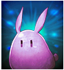 |
図鑑1 | ||
| ルビント | 力 | 命中率 Lv 8 |
クリティカル確率 Lv 4 |
闇抵抗力 Lv 4 |
- | 濃い橙色の可愛いレビット種。レビット種の中でも最も希少と言われる。可愛らしい姿で多くの人から愛されている。 | 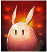 |
図鑑1 | ||
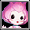 |
花霊アサガオ | 知識 | 大地強化 Lv 8 |
被ダメージCPに変換 Lv 4 |
最大CP Lv 4 |
- | ピンク色の花霊。花畑に生息し、人間を見ると隠れる習性がある。優雅なしぐさが特徴。 | 図鑑1 | ||
| 花霊ローズ | 力 | 攻撃力 Lv 8 |
状態異常抵抗力 Lv 4 |
クリティカルダメージ Lv 4 |
- | 赤色の花霊。花畑に生息し、人間を見ると隠れる習性がある。優雅なしぐさが特徴。 | 図鑑1 | |||
| 花霊スミレ | 知識 | 状態異常抵抗力 Lv 8 |
最大体力 Lv 4 |
悪魔型ダメージ Lv 4 |
- | 青色の花霊。花畑に生息し、人間を見ると隠れる習性がある。優雅なしぐさが特徴。 | 図鑑1 | |||
| 花霊ベル | 力 | 大地低下 Lv 8 |
大地強化 Lv 4 |
大地抵抗力 Lv 4 |
- | 紫色の花霊。花畑に生息し、人間を見ると隠れる習性がある。優雅なしぐさが特徴。 | 図鑑1 | |||
| 花霊ナノハ | サポート | 風抵抗力 Lv 8 |
命中率 Lv 4 |
全ての属性抵抗 Lv 4 |
- | 黄色の花霊。花畑に生息し、人間を見ると隠れる習性がある。優雅なしぐさが特徴。 | 図鑑1 | |||
| 花霊カスミ | サポート | 被ダメージ反射 Lv 8 |
ペット&召喚獣全てのステータス Lv 4 |
ペット&召喚獣状態異常抵抗 Lv 4 |
- | 灰色の花霊。花畑に生息し、人間を見ると隠れる習性がある。優雅なしぐさが特徴。 | 図鑑1 | |||
| 花霊ノウゼン | 知識 | 風強化 Lv 8 |
最大CP Lv 4 |
風低下 Lv 4 |
- | オレンジ色の花霊。花畑に生息し、人間を見ると隠れる習性がある。優雅なしぐさが特徴。 | 図鑑1 | |||
| 花霊ワスレナ | サポート | 攻撃速度 Lv 8 |
最大体力 Lv 4 |
大地低下 Lv 4 |
- | ライトパープル色の花霊。花畑に生息し、人間を見ると隠れる習性がある。優雅なしぐさが特徴。 | 図鑑1 | |||
| 花霊アマドコロ | 健康 | 風低下 Lv 8 |
風抵抗力 Lv 4 |
風強化 Lv 4 |
- | ライトグリーン色の花霊。花畑に生息し、人間を見ると隠れる習性がある。優雅なしぐさが特徴。 | 図鑑1 | |||
| 花霊ウィロウ | 健康 | 経験値 Lv 8 |
攻撃力 Lv 4 |
火抵抗力 Lv 4 |
- | 緑色の花霊。花畑に生息し、人間を見ると隠れる習性がある。優雅なしぐさが特徴。 | 図鑑1 | |||
| 花霊アイリス | 知識 | 被魔法ダメージ吸収 Lv 8 |
風強化 Lv 4 |
移動速度 Lv 4 |
- | 紺色の花霊。花畑に生息し、人間を見ると隠れる習性がある。優雅なしぐさが特徴。 | 図鑑1 | |||
| 鹿朱 | 知識 | - | - | - | - | 生まれたばかりの麒麟の子供。純真無垢な足取りであちこちを歩き回りながら好奇心を満たしているが、本能と運命がその方向をすべての動物の頂点に導いている。 | × | |||
| 蒼天 | 知識 | - | - | - | - | 昇天して間もない青龍。 若いが、自分の如意宝珠で様々な研究と修練を経て、同年代の他の龍よりはるかに強力だ。困っている人たちを一生懸命助けようとしている。 | × | |||
| バードフリル | サポート | - | - | - | - | 元気になるエールをおくり、元気づけてくれる不思議なエリマキトカゲ。すこしおっちょこちょいなところがある。 | × | |||
| くノーラクーン | 健康 | - | - | - | - | 忍術を極め素早く動き回れるクノイチ。 | × | |||
| ロダン | 知識 | - | - | - | - | 何かを考えていそうだが実は考えていない奇妙な鳥。唐突に怒り出すこともあるが、一見したところではなぜ怒っているのか、そもそも怒っているのかどうかさえ分からない。 | × | |||
| R レア | ||||||||||
| アイコン | クリーチャー名 | Type | メインパッシブ | サブパッシブ1 | サブパッシブ2 | サブパッシブ3 | 説明 | 立ち絵 | 図鑑 | 備考 |
| 黄昏のフレア | 知識 | 火低下 Lv 16 |
回避率 Lv 8 |
火強化 Lv 8 |
- | 踊る黄昏のフレア。全身にまとっている魂の炎で敵を焼いてしまう。 | 図鑑1 | |||
| 堕落のフレア | 知識 | 水低下 Lv 16 |
水強化 Lv 8 |
最大CP Lv 8 |
- | 灼かれた堕落のフレア。全身にまとっている堕落の炎で敵を焼いてしまう。 | 図鑑1 | |||
| 呪いのフレア | 知識 | 風低下 Lv 16 |
全ての属性抵抗 Lv 8 |
風強化 Lv 8 |
- | 邪悪な呪いのフレア。全身にまとっている呪いの炎で敵を焼いてしまう。 | 図鑑1 | |||
| 暗闇のフレア | 知識 | 水強化 Lv 16 |
水抵抗力 Lv 8 |
水低下 Lv 8 |
- | 深い暗闇のフレア。全身にまとっている闇の炎で敵を焼いてしまう。 | 図鑑1 | |||
| 地獄のフレア | サポート | 状態異常抵抗力 Lv 16 |
攻撃速度 Lv 8 |
悪魔型ダメージ Lv 8 |
- | 絶望に満ちた地獄のフレア。全身にまとっている地獄の炎で敵を焼いてしまう。 | 図鑑1 | |||
| ボーンナイト | 力 | 闇抵抗力 Lv 16 |
最大体力 Lv 8 |
防御力 Lv 8 |
- | 剣と兜で武装した骸骨の騎士。赤い眼で敵を捕らえて、粉砕する。 | 図鑑1 | |||
| ボーンウォリアー | 健康 | 大地強化 Lv 16 |
防御力 Lv 8 |
大地強化 Lv 8 |
- | 斧で武装した骸骨の戦士。赤い眼で敵を捕らえて、力強い斧術で攻撃する。 | 図鑑1 | |||
| ボーンヒーロー | 健康 | 闇低下 Lv 16 |
闇強化 Lv 8 |
経験値 Lv 8 |
- | 剣で武装した骸骨の勇者。華麗な剣術で敵を攻撃する。黄金色に光っているのが特徴。 | 図鑑1 | |||
| ボーンソルジャー | 力 | 防御力 Lv 16 |
攻撃力 Lv 8 |
被ダメージ反射 Lv 8 |
- | 剣で武装した骸骨の兵士。赤い眼で敵を捕らえて、強力な剣術で攻撃する。 | 図鑑1 | |||
| ボーンシーフ | サポート | 闇強化 Lv 16 |
スキルクールタイム減少 Lv 8 |
闇低下 Lv 8 |
- | 剣で武装した骸骨の盗賊。闇の中に潜み、敵が現れると一気に粉砕する。 | 図鑑1 | |||
| 空色のルジュエ | 力 | 被ダメージ反射 Lv 16 |
最大体力 Lv 8 |
ドロップ率 Lv 8 |
- | 自由を求める空色のルジュエ。主人に捨てられた後、魔法で命を吹き込まれた。やっと手に入れた自由に、毎日が幸せ。 | 図鑑1 | |||
| 血色のルジュエ | 知識 | 火強化 Lv 16 |
火低下 Lv 8 |
スキル Lv 8 |
- | すべての生命体を呪う血色のルジュエ。主人に捨てられた後、魔法で命を吹き込まれた。生きているものを憎み、呪い殺そうとする。 | 図鑑1 | |||
| リボンのルジュエ | サポート | 移動速度 Lv 16 |
クリティカルダメージ Lv 8 |
命中率 Lv 8 |
- | 主人を慕うリボンのルジュエ。主人に捨てられた後、魔法で命を吹き込まれた。もう1度主人に会えることを願って、頭にリボンをつけた。 | 図鑑1 | |||
| 太糸のルジュエ | 健康 | 回避率 Lv 16 |
移動速度 Lv 8 |
神獣型ダメージ Lv 8 |
- | 人間になりたい太糸のルジュエ。主人に捨てられた後、魔法で命を吹き込まれた。人間になりたくて、頭に太糸をつけた。 | 図鑑1 | |||
| ルジュエ | 健康 | 最大CP Lv 16 |
ドロップ率 Lv 8 |
攻撃速度 Lv 8 |
- | 捨てられたルジュエ。主人に捨てられた後、魔法で命を吹き込まれた。果てしない執着と憎しみを抱いている。ユルサナイ。 | 図鑑1 | |||
| ヴィド | サポート | 大地抵抗力 Lv 16 |
被ダメージCPに変換 Lv 8 |
攻撃力 Lv 8 |
- | 古代の森の精霊。頭に鹿の角をつけ、子供の姿で森の中で暮らしていた。弱気そうに見えるが、内に秘めた力は強い。 | 図鑑1 | |||
| モヒカンキャロ | 力 | ドロップ率 Lv 16 |
経験値 Lv 8 |
クリティカルダメージ減少 Lv 8 |
- | 無法者のモヒカンキャロ。モヒカン頭で短い手足が特徴。通りすがりの商団や冒険家たちを襲って、金品を奪っていた。 | 図鑑1 | |||
| リーゼントキャロ | 健康 | クリティカルダメージ Lv 16 |
クリティカル確率 Lv 8 |
動物型ダメージ Lv 8 |
- | 無法者のリーゼントキャロ。リーゼント頭で短い手足が特徴。通りすがりの商団や冒険家たちを襲って、金品を奪っていた。 | 図鑑1 | |||
| アフロキャロ | 知識 | 風強化 Lv 16 |
風低下 Lv 8 |
状態異常抵抗力 Lv 8 |
- | 無法者のアフロキャロ。アフロ頭で短い手足が特徴。通りすがりの商団や冒険家たちを襲って、金品を奪っていた。 | 図鑑1 | |||
| ファフ | 力 | 全ての属性抵抗 Lv 16 |
光強化 Lv 8 |
能力値低下防止 Lv 8 |
- | 大きな炎の蛙ファフ。黄色のお腹が特徴。背中には赤色の炎が浮かんでいる。姿を見て皆怖がるが、実はとてもおとなしい。 | 図鑑1 | |||
| ポフ | 知識 | 光低下 Lv 16 |
アンデッド型ダメージ Lv 8 |
光強化 Lv 8 |
- | 大きな炎の蛙ポフ。赤色のお腹が特徴。背中には赤色の炎が浮かんでいる。姿を見て皆怖がるが、実はとてもおとなしい。 | 図鑑1 | |||
| パフ | 健康 | 火強化 Lv 16 |
火低下 Lv 8 |
火抵抗力 Lv 8 |
- | 大きな炎の蛙パフ。紫色のお腹が特徴。背中には赤色の炎が浮かんでいる。姿を見て皆怖がるが、実はとてもおとなしい。 | 図鑑1 | |||
| プフ | サポート | 大地低下 Lv 16 |
大地抵抗力 Lv 8 |
大地強化 Lv 8 |
- | 大きな炎の蛙プフ。薄い緑のお腹が特徴。背中には赤色の炎が浮かんでいる。姿を見て皆怖がるが、実はとてもおとなしい。 | 図鑑1 | |||
| レッドアブソル | 力 | クリティカル確率 Lv 16 |
クリティカルダメージ Lv 8 |
全ての属性抵抗 Lv 8 |
- | 海の海賊レッドアブソル。海で暮らす魚人で、海岸の村や船を略奪してきた。間抜けで鈍いが、お宝への欲はとどまることを知らない。 | 図鑑1 | |||
| ブルーアブソル | サポート | 攻撃力 Lv 16 |
体力吸収 Lv 8 |
水抵抗力 Lv 8 |
- | 海の海賊ブルーアブソル。海で暮らす魚人で、海岸の村や船を略奪してきた。間抜けで鈍いが、お宝への欲はとどまることを知らない。 | 図鑑1 | |||
| グリーンアブソル | 健康 | 大地強化 Lv 16 |
大地抵抗力 Lv 8 |
大地低下 Lv 8 |
- | 海の海賊グリーンアブソル。海で暮らす魚人で、海岸の村や船を略奪してきた。間抜けで鈍いが、お宝への欲はとどまることを知らない。 | 図鑑1 | |||
| パープルアブソル | 健康 | 防御力 Lv 16 |
被魔法ダメージ吸収 Lv 8 |
被ダメージ反射 Lv 8 |
- | 海の海賊パープルアブソル。海で暮らす魚人で、海岸の村や船を略奪してきた。間抜けで鈍いが、お宝への欲はとどまることを知らない。 | 図鑑1 | |||
| ロードアブソル | 力 | クリティカル確率 Lv 16 |
スキル Lv 8 |
火抵抗力 Lv 8 |
- | 海賊隊長のロードアブソル。10年に1人の強い魚人と言われている。子分を従え、今日もお宝を目指す。 | 図鑑1 | |||
| 強靭なヒヨコ戦士 | 力 | 攻撃速度 Lv 16 |
体力吸収 Lv 8 |
風抵抗力 Lv 8 |
- | 強いヒヨコ戦士。可愛い外見のせいでよく見下されるが、実は剣術の達人である。自ら弱者の味方であると公言している。 | 図鑑1 | |||
| 強運のヒヨコ戦士 | サポート | クリティカル確率 Lv 16 |
最大CP Lv 8 |
攻撃速度 Lv 8 |
- | 運が良いヒヨコ戦士。可愛い外見のせいでよく見下されるが、実は剣術の達人である。運が良いので万事うまくいく。 | 図鑑1 | |||
| 賢明なヒヨコ戦士 | 知識 | 光強化 Lv 16 |
光低下 Lv 8 |
アンデッド型ダメージ Lv 8 |
- | 頭の良いヒヨコ戦士。可愛い外見のせいでよく見下されるが、実は剣術の達人である。とても賢く、素晴らしい作戦を思いつくことがある。 | 図鑑1 | |||
| 疾風のヒヨコ戦士 | 知識 | 大地強化 Lv 16 |
最大体力 Lv 8 |
大地低下 Lv 8 |
- | 素早いヒヨコ戦士。可愛い外見のせいでよく見下されるが、実は剣術の達人である。目に見えないほど早く動ける。 | 図鑑1 | |||
| 壮健なヒヨコ戦士 | 健康 | クリティカルダメージ減少 Lv 16 |
クリティカル確率 Lv 8 |
光抵抗力 Lv 8 |
- | 身体の丈夫なヒヨコ戦士。可愛い外見のせいでよく見下されるが、実は剣術の達人である。どんな攻撃にも決して屈しない。 | 図鑑1 | |||
| ワイアットピグ | 健康 | 最大体力 Lv 16 |
風抵抗力 Lv 8 |
全ての属性抵抗 Lv 8 |
- | ピグ兄弟の長兄。戦斧を巧みに使う。かわいい見た目とは違い強靭な肉体を誇る。他人の物を欲しがる悪い癖がある。 | × | |||
| コリントピグ | 力 | 火強化 Lv 16 |
火低下 Lv 8 |
スキル Lv 8 |
- | ピグ兄弟の次兄。剣を巧みに使う。かわいい見た目とは違い強靭な肉体を誇る。他人の物を欲しがる悪い癖がある。 | × | |||
| フィルバートピグ | 知識 | 風強化 Lv 16 |
風低下 Lv 8 |
クリティカルダメージ減少 Lv 8 |
- | ピグ兄弟の三兄。剣を巧みに使う。かわいい見た目とは違い強靭な肉体を誇る。他人の物を欲しがる悪い癖がある。 | × | |||
| メイソンピグ | サポート | ペット&召喚獣体力 Lv 16 |
ペット&召喚獣状態異常抵抗 Lv 8 |
ペット&召喚獣強化 Lv 8 |
- | ピグ兄弟の末弟。こん棒を巧みに使う。かわいい見た目とは違い強靭な肉体を誇る。他人の物を欲しがる悪い癖がある。 | × | |||
| 骸骨仮面バット | 力 | 被ダメージCPに変換 Lv 16 |
防御力 Lv 8 |
抵抗力低下防止 Lv 8 |
- | 骸骨仮面に棲息するコウモリ。骸骨仮面で人を驚かせて喜ぶ習性がある。 一般的なコウモリと違って、昼間でも活発に行動する。 | × | |||
| ピエロ仮面バット | 知識 | 命中率 Lv 16 |
闇強化 Lv 8 |
闇低下 Lv 8 |
- | ピエロ仮面に棲息するコウモリ。ピエロ仮面で人を驚かせて喜ぶ習性がある。 一般的なコウモリと違って、昼間でも活発に行動する。 | × | |||
| 舞台仮面バット | 健康 | 状態異常抵抗力 Lv 16 |
攻撃力 Lv 8 |
クリティカルダメージ Lv 8 |
- | 舞台仮面に棲息するコウモリ。舞台仮面で人を驚かせて喜ぶ習性がある。 一般的なコウモリと違って、昼間でも活発に行動する。 | × | |||
| トガリ仮面バット | サポート | ペット&召喚獣攻撃力 Lv 16 |
ペット&召喚獣攻撃力 Lv 8 |
ペット&召喚獣全てのステータス Lv 8 |
- | トガリ仮面に棲息するコウモリ。トガリ仮面で人を驚かせて喜ぶ習性がある。 一般的なコウモリと違って、昼間でも活発に行動する。 | × | |||
| ピンクチビット | 力 | スキル Lv 16 |
火強化 Lv 8 |
クリティカル確率 Lv 8 |
- | 勉強好きな子うさぎ。読書に熱中するあまり視力が落ちてしまった。それでもなお、大きな耳を澄ませて学ぼうとしている。 | × | |||
| ブルーチビット | 知識 | 最大体力 Lv 16 |
状態異常抵抗力 Lv 8 |
経験値 Lv 8 |
- | 勉強好きな子うさぎ。読書に熱中するあまり視力が落ちてしまった。それでもなお、大きな耳を澄ませて学ぼうとしている。 | × | |||
| グリーンチビット | 健康 | ペット&召喚獣状態異常抵抗 Lv 16 |
ペット&召喚獣強化 Lv 8 |
ペット&召喚獣体力 Lv 8 |
- | 勉強好きな子うさぎ。読書に熱中するあまり視力が落ちてしまった。それでもなお、大きな耳を澄ませて学ぼうとしている。 | × | |||
| オレンジチビット | サポート | クリティカルダメージ Lv 16 |
防御力 Lv 8 |
命中率 Lv 8 |
- | 勉強好きな子うさぎ。読書に熱中するあまり視力が落ちてしまった。それでもなお、大きな耳を澄ませて学ぼうとしている。 | × | |||
| 花精マリアカラス | 力 | 攻撃力 Lv 16 |
体力吸収 Lv 8 |
状態異常抵抗力 Lv 8 |
- | 両腕の先端がバラで覆われた花の妖精。芳しい香りと可憐な容姿に反して気難しい性格。 | × | |||
| 花精シャルル | 知識 | ペット&召喚獣強化 Lv 16 |
ペット&召喚獣全てのステータス Lv 8 |
攻撃速度 Lv 8 |
- | 両腕の先端がバラで覆われた花の妖精。芳しい香りと可憐な容姿に反して気難しい性格。 | × | |||
| 花精サンブライト | 健康 | 経験値 Lv 16 |
移動速度 Lv 8 |
水低下 Lv 8 |
- | 両腕の先端がバラで覆われた花の妖精。芳しい香りと可憐な容姿に反して気難しい性格。 | × | |||
| 花精ブルームーン | サポート | スキル Lv 16 |
神獣型ダメージ Lv 8 |
体力吸収 Lv 8 |
- | 両腕の先端がバラで覆われた花の妖精。芳しい香りと可憐な容姿に反して気難しい性格。 | × | |||
| ブラウンモス | 力 | 火抵抗力 Lv 16 |
攻撃力 Lv 8 |
被魔法ダメージ吸収 Lv 8 |
- | 恥ずかしがり屋の蛾の妖精。森の洞窟に棲み、めったに姿を見ることはないが、助けてくれた者には極上の絹糸を贈ると言われる。 | × | |||
| バイオレットモス | 知識 | 水抵抗力 Lv 16 |
水強化 Lv 8 |
能力値低下防止 Lv 8 |
- | 恥ずかしがり屋の蛾の妖精。森の洞窟に棲み、めったに姿を見ることはないが、助けてくれた者には極上の絹糸を贈ると言われる。 | × | |||
| オリーブモス | 健康 | 風抵抗力 Lv 16 |
最大体力 Lv 8 |
抵抗力低下防止 Lv 8 |
- | 恥ずかしがり屋の蛾の妖精。森の洞窟に棲み、めったに姿を見ることはないが、助けてくれた者には極上の絹糸を贈ると言われる。 | × | |||
| ミュータントモス | サポート | 大地抵抗力 Lv 16 |
悪魔型ダメージ Lv 8 |
闇抵抗力 Lv 8 |
- | 恥ずかしがり屋の蛾の妖精。森の洞窟に棲み、めったに姿を見ることはない。突然変異種で、他のシルキーより神秘的な髪色を帯びている。 | × | |||
| パープルエリーズ | 力 | クリティカル確率 Lv 16 |
経験値 Lv 8 |
水抵抗力 Lv 8 |
- | 花をこよなく愛するケンタウロス族の少女。植物を蘇生させる能力を持つ。長いまつげがチャームポイント。 | × | |||
| ブルーエリーズ | 知識 | 光抵抗力 Lv 16 |
攻撃力 Lv 8 |
神獣型ダメージ Lv 8 |
- | 花をこよなく愛するケンタウロス族の少女。植物を蘇生させる能力を持つ。長いまつげがチャームポイント。 | × | |||
| レッドエリーズ | サポート | ペット&召喚獣攻撃力 Lv 16 |
ペット&召喚獣状態異常抵抗 Lv 8 |
ペット&召喚獣体力 Lv 8 |
- | 花をこよなく愛するケンタウロス族の少女。植物を蘇生させる能力を持つ。長いまつげがチャームポイント。 | × | |||
| グリーンエリーズ | 健康 | 移動速度 Lv 16 |
被ダメージ反射 Lv 8 |
火抵抗力 Lv 8 |
- | 花をこよなく愛するケンタウロス族の少女。植物を蘇生させる能力を持つ。長いまつげがチャームポイント。 | × | |||
| チャンピオンマモ | 力 | 攻撃力 Lv 16 |
アンデッド型ダメージ Lv 8 |
光強化 Lv 8 |
- | 森のチャンピオンリス姉妹の長女。愛らしい容姿の裏には不屈のファイターの情熱が隠されている。キャロ族と王座を争っている。 | × | |||
| チャンピオンシマ | 知識 | ペット&召喚獣全てのステータス Lv 16 |
ペット&召喚獣攻撃力 Lv 8 |
ペット&召喚獣体力 Lv 8 |
- | 森のチャンピオンリス姉妹の次女。愛らしい容姿の裏には不屈のファイターの情熱が隠されている。キャロ族と王座を争っている。 | × | |||
| チャンピオンモモ | サポート | 最大体力 Lv 16 |
闇抵抗力 Lv 8 |
体力吸収 Lv 8 |
- | 森のチャンピオンリス姉妹の末っ子。愛らしい容姿の裏には不屈のファイターの情熱が隠されている。キャロ族と王座を争っている。 | × | |||
| チャンピオンジリ | 健康 | 最大CP Lv 16 |
クリティカル確率 Lv 8 |
ドロップ率 Lv 8 |
- | 森のチャンピオンリス姉妹の三女。愛らしい容姿の裏には不屈のファイターの情熱が隠されている。キャロ族と王座を争っている。 | × | |||
| プリンスリオン | 力 | スキル Lv 16 |
ドロップ率 Lv 8 |
回避率 Lv 8 |
- | まっすぐで勇敢な性格のライオンの兄弟。王座を巡ってお互いを牽制している。能力別に異なる色のたてがみ装飾をつけている。緑色のたてがみ装飾はリオンの象徴。 | × | |||
| プリンスラオン | 知識 | 被魔法ダメージ吸収 Lv 16 |
悪魔型ダメージ Lv 8 |
命中率 Lv 8 |
- | まっすぐで勇敢な性格のライオンの兄弟。王座を巡ってお互いを牽制している。能力別に異なる色のたてがみ装飾をつけている。紫色のたてがみ装飾はラオンの象徴。 | × | |||
| プリンスロウン | 健康 | 攻撃速度 Lv 16 |
クリティカルダメージ Lv 8 |
光抵抗力 Lv 8 |
- | まっすぐで勇敢な性格のライオンの兄弟。王座を巡ってお互いを牽制している。能力別に異なる色のたてがみ装飾をつけている。青色のたてがみ装飾はロウンの象徴。 | × | |||
| プリンスルウン | サポート | スキル Lv 16 |
動物型ダメージ Lv 8 |
経験値 Lv 8 |
- | まっすぐで勇敢な気質の子ライオン兄弟。王座を巡ってお互いを牽制している。能力別に異なる色のたてがみ装飾をつけている。赤色のたてがみ装飾はルウンの象徴。 | × | |||
| アスター | 力 | 被魔法ダメージ吸収 Lv 16 |
大地低下 Lv 8 |
攻撃力 Lv 8 |
- | 森番人のハリネズミ。木の盾を装備している。頑固そうだが、実は照れ屋で顔を仮面で隠している。 | × | |||
| エスター | 知識 | 防御力 Lv 16 |
風強化 Lv 8 |
被ダメージCPに変換 Lv 8 |
- | 森番人のハリネズミ。木の盾を装備している。頑固そうだが、実は照れ屋で顔を仮面で隠している。 | × | |||
| ウスター | 健康 | 光強化 Lv 16 |
動物型ダメージ Lv 8 |
移動速度 Lv 8 |
- | 森番人のハリネズミ。木の盾を装備している。頑固そうだが、実は照れ屋で顔を仮面で隠している。 | × | |||
| イスター | サポート | ペット&召喚獣全てのステータス Lv 16 |
回避率 Lv 8 |
クリティカルダメージ減少 Lv 8 |
- | 森番人のハリネズミ。木の盾を装備している。頑固そうだが、実は照れ屋で顔を仮面で隠している。 | × | |||
| オローニ | 知識 | 火抵抗力 Lv 16 |
火低下 Lv 8 |
ペット&召喚獣攻撃力 Lv 8 |
- | 赤く光る巨大な球体と腕が頭に付いている正体不明の生き物。子供のように天真爛漫な性格である。 | × | |||
| オローナ | サポート | 水抵抗力 Lv 16 |
水低下 Lv 8 |
ペット&召喚獣強化 Lv 8 |
- | 青く光る巨大な球体と腕が頭に付いている正体不明の生き物。子供のように天真爛漫な性格である。 | × | |||
| オローネ | 知識 | 風抵抗力 Lv 16 |
風低下 Lv 8 |
ペット&召喚獣状態異常抵抗 Lv 8 |
- | 緑色に光る巨大な球体と腕が頭に付いている正体不明の生き物。子供のように天真爛漫な性格である。 | × | |||
| オローヌ | サポート | 大地抵抗力 Lv 16 |
大地低下 Lv 8 |
ペット&召喚獣体力 Lv 8 |
- | 黄色く光る巨大な球体と腕が頭に付いている正体不明の生き物。子供のように天真爛漫な性格である。 | × | |||
| ソードガーディアン | 力 | 防御力 Lv 16 |
神獣型ダメージ Lv 8 |
被ダメージ反射 Lv 8 |
- | この兵士達は守護のために作られた。様々な種類の丈の長い兵器を使いこなせるよう設計され、中でも巨大な剣を持っているタイプの兵士だ。 | × | |||
| アックスガーディアン | 健康 | 最大体力 Lv 16 |
動物型ダメージ Lv 8 |
最大CP Lv 8 |
- | この兵士達は守護のために作られた。様々な種類の丈の長い兵器を使いこなせるよう設計され、中でも巨大な斧を持っているタイプの兵士だ。 | × | |||
| ハンマーガーディアン | 力 | クリティカルダメージ減少 Lv 16 |
アンデッド型ダメージ Lv 8 |
獲得CP増加 Lv 8 |
- | この兵士達は守護のために作られた。様々な種類の丈の長い兵器を使いこなせるよう設計され、中でも巨大な槌を持っているタイプの兵士だ。 | × | |||
| スピアガーディアン | 健康 | 状態異常抵抗力 Lv 16 |
悪魔型ダメージ Lv 8 |
被ダメージCPに変換 Lv 8 |
- | この兵士達は守護のために作られた。様々な種類の丈の長い兵器を使いこなせるよう設計され、中でも巨大な槍を持っているタイプの兵士だ。 | × | |||
| アウルナイト | 健康 | 被ダメージ反射 Lv 16 |
最大体力 Lv 8 |
命中率 Lv 8 |
- | フクロウ族の勇敢な戦士。常に剣と盾を持ち歩き、仲間を心強く護衛する。 | × | |||
| アウルスカウト | サポート | クリティカル確率 Lv 16 |
攻撃速度 Lv 8 |
回避率 Lv 8 |
- | フクロウ族の俊敏な偵察師。常に弓と矢を持ち歩き、周辺を眼光鋭く注視している。 | × | |||
| アウルスコラ | 知識 | 経験値 Lv 16 |
最大CP Lv 8 |
スキル Lv 8 |
- | フクロウ族の賢明な賢者。常にフクロウ族の知恵が書かれている魔法書を持ち歩き研究を続けている。 | × | |||
| アウルバンディット | 力 | ドロップ率 Lv 16 |
移動速度 Lv 8 |
体力吸収 Lv 8 |
- | フクロウ族の敏捷なシーフ。常に鋭い双剣を持ち歩き、危険なトラップを暴いていく。 | × | |||
| ブルーペガサス | 力 | 悪魔型ダメージ Lv 16 |
攻撃力 Lv 8 |
防御力 Lv 8 |
- | 空を駆けるブルーペガサス。羽を伸ばし素早く駆け出すと誰も追いつく事は出来ないという。 | × | |||
| レッドペガサス | 知識 | 火低下 Lv 16 |
魔法攻撃力強化 Lv 8 |
火抵抗力 Lv 8 |
- | 空を駆けるレッドペガサス。羽を伸ばし素早く駆け出すと誰も追いつく事は出来ないという。 | × | |||
| グリーンペガサス | 健康 | 全ての属性抵抗 Lv 16 |
移動速度 Lv 8 |
能力値低下防止 Lv 8 |
- | 空を駆けるグリーンペガサス。羽を伸ばし素早く駆け出すと誰も追いつく事は出来ないという。 | × | |||
| パープルペガサス | サポート | 攻撃速度 Lv 16 |
光低下 Lv 8 |
最大体力 Lv 8 |
- | 空を駆けるパープルペガサス。羽を伸ばし素早く駆け出すと誰も追いつく事は出来ないという。 | × | |||
| HR ハイレア | ||||||||||
| アイコン | クリーチャー名 | Type | メインパッシブ | サブパッシブ1 | サブパッシブ2 | サブパッシブ3 | 説明 | 立ち絵 | 図鑑 | 備考 |
| コボルト大魔導師 | 知識 | 火低下 Lv 24 |
火強化 Lv 12 |
上級魔法攻撃力強化 Lv 3 |
- | 生まれつきの才能で最強の大魔導師となったコボルト。最近調子に乗っているらしい。ウエ～イ。 | 図鑑1 | |||
| ウィッチマゴ | 知識 | 光低下 Lv 24 |
光強化 Lv 12 |
魔法強打 Lv 3 |
- | 老婆の姿をした魔女。しわだらけの顔は欲望にまみれている。実はなにか秘密があるらしい。 | 図鑑1 | |||
| ドレアス | サポート | 水低下 Lv 24 |
水強化 Lv 12 |
水抵抗力 Lv 12 |
- | 氷の精霊ドレアス。髪の毛まで凍りついている。ゆったりとした動きが特徴。 | 図鑑1 | |||
| ナイトスピア | 健康 | アンデッド型ダメージ Lv 24 |
上級状態異常抵抗力 Lv 3 |
闇抵抗力 Lv 12 |
- | 不死のナイトスピア。死と再生を繰り返すほど強くなる。寡黙で落ち着いた性格。 | 図鑑1 | |||
| ドベルト | 健康 | 動物型ダメージ Lv 24 |
クリティカル確率 Lv 12 |
PVP防御力 Lv 3 |
- | 不思議な姿のドーベルマン。兎の皮を被って歩き回る。なぜかピンク色に異常な執着をみせる。 | 図鑑1 | |||
| タイムシュラット | 力 | スキルクールタイム減少 Lv 24 |
被ダメージ反射 Lv 12 |
風抵抗力 Lv 12 |
- | 時空間を守る紳士的なネズミ。2本の剣は時針と分針を意味する。時空間を乱す者を裁く審判者。 | 図鑑1 | |||
| エマティース | 健康 | 大地低下 Lv 24 |
大地強化 Lv 12 |
最大CP Lv 12 |
- | 鉱山付近で暮らしていたクリーチャー。背中には宝石がついており、まばゆく輝いている。プライドが高い。 | 図鑑1 | |||
| トゥルイク | 力 | 悪魔型ダメージ Lv 24 |
PVP防御力 Lv 3 |
上級攻撃力 Lv 3 |
- | 2本の両刀斧を持つ、ワニの剣闘士。好戦的な性格で、すぐ頭に血がのぼってしまう。 | 図鑑1 | |||
| グリフォン | 力 | 風低下 Lv 24 |
風強化 Lv 12 |
上級最大CP Lv 3 |
- | はるか昔は碧空の支配者だったが、次元を超えている際に、記憶を失ってしまった。首にかかった鎖のせいでいつも機嫌が悪い。 | 図鑑1 | |||
| マスクグール | サポート | 闇低下 Lv 24 |
闇強化 Lv 12 |
与魔法ダメージ吸収 Lv 3 |
- | ネガティブな感情の塊。挫折と恐怖、そして悲哀が混ざって生成された悪魔。 | 図鑑1 | |||
| 泣き虫ルドルフ | サポート | ドロップ率 Lv 24 |
PVP攻撃力 Lv 3 |
命中率 Lv 12 |
- | サンタに追い出された可哀そうなルドルフ。いつも目に涙を浮かべている。ふええん。 | 図鑑1 | |||
| クリスマスフェアリー | 知識 | ペット&召喚獣体力 Lv 24 |
経験値 Lv 12 |
ペット&召喚獣強化 Lv 12 |
- | 子供の靴下にプレゼントを入れてくれる妖精。柔らかい靴下の感触が好きで、頭に靴下を被っている。靴下は未使用なのでご安心を。 | 図鑑1 | |||
| フォクシーテール | 知識 | 経験値 Lv 24 |
人間型魔法ダメージ Lv 3 |
上級魔法攻撃力強化 Lv 3 |
- | ウッドスタッフを持ち歩く狐の魔法師。いつも被っている花飾りの帽子は、お手製の一品。 | 図鑑1 | |||
| ハウンデブル | 力 | 被魔法ダメージ吸収 Lv 24 |
被ダメージCPに変換 Lv 12 |
火抵抗力 Lv 12 |
- | 溶岩が流れる火山地帯に生息する炎の狂犬。体内から放たれる熱気は近づけないほど熱い。 | 図鑑1 | |||
| ペンギン大佐 | 力 | 回避率 Lv 24 |
上級防御力 Lv 3 |
風抵抗力 Lv 12 |
- | 大空に憧れるペンギン。トレーニングを重ねた結果、ちょっとだけ飛べるようになった。大佐を名乗っているが軍人ではない。 | × | |||
| プリンセスルーナ | サポート | 被魔法ダメージ吸収 Lv 24 |
人間型ダメージ Lv 3 |
抵抗力低下防止 Lv 12 |
- | 新月の夜に地上に降りるとされる月の精霊。精霊界の王家に生まれるが、家出中なので最近はいつも地上にいる。 | × | |||
| クマーン | 健康 | 防御力 Lv 24 |
強打 Lv 3 |
全ての属性抵抗 Lv 12 |
- | 人里離れた山奥に生息するクマーンは気は優しくて力持ち。森の小さな仲間が危険にさらされた時は、巨大な丸太を振り回して戦うよクマ―！ | × | |||
| 見習い魔女リトル | サポート | クリティカルダメージ減少 Lv 24 |
上級体力 Lv 3 |
能力値低下防止 Lv 12 |
- | キャンディのかごを持った見習い魔女。魔女修行のためキャンデーをみんなに配っている。 キャンデーの中に、超酸っぱいのが1個だけ混ざっているらしい。 | × | |||
| ライカンスロープ | 力 | 神獣型ダメージ Lv 24 |
敵致命打減少 Lv 3 |
被ダメージ反射 Lv 12 |
- | 自我を失い、元の姿に戻れなかった人狼。性格は獰猛で気が短い。赤い瞳は狂気に満ちている。 | × | |||
| キングクレバネット | 力 | 経験値 Lv 24 |
体力吸収 Lv 12 |
上級攻撃速度 Lv 3 |
- | 金メッキの鎧と王笏を身に着けたカラス。カラスの王を自称しており、偉ぶることが大好きだ。 | × | |||
| ガイア | サポート | 闇低下 Lv 24 |
魔法強打 Lv 3 |
光抵抗力 Lv 12 |
- | 万物と共鳴し真理を探究し続ける精霊。非常に静かだが、真理について一旦口を開くと、千年間しゃべり続けると言われる。 | × | |||
| トリックスター | 健康 | 状態異常抵抗力 Lv 24 |
防御力 Lv 12 |
人間型ダメージ抵抗 Lv 3 |
- | 凶暴な性格のイノシシを駆るちびっ子冒険家。勝手に走り回るイノシシのせいでいつもフラフラしている。 | × | |||
| ドリーマー | 健康 | 命中率 Lv 24 |
上級攻撃力 Lv 3 |
攻撃速度 Lv 12 |
- | 人の夢を巧みに操り「夢見術師」の異名を持つ魔術師。ドリーマーにお願いすると悪夢を見なくなる魔法をかけてくれる。 | × | |||
| ノーマド | 知識 | 回避率 Lv 24 |
大地抵抗力 Lv 12 |
魔法抵抗力低下 Lv 3 |
- | 鎧の中に閉じ込められて彷徨う魂。ノーマドと目が合うと気を失ってしまうと言われている。 | × | |||
| シッティングダイル | 力 | 攻撃速度 Lv 24 |
クリティカルダメージ Lv 12 |
回避率 Lv 12 |
- | 懸賞金ハンターのリザードマン。一度狙った獲物を逃すことはない。虚栄心が強く、殺した得物の骨の装飾具を過剰にかけてまわる。 | × | |||
| メラニー | サポート | ペット&召喚獣強化 Lv 24 |
ペット&召喚獣全てのステータス Lv 12 |
最大CP Lv 12 |
- | 人間に憎悪を植え付ける悪魔の子。メラニーの矢が当たると、血が凍り愛情は嫌悪に変わる。 | × | |||
| シーウォーカー | 健康 | 最大体力 Lv 24 |
ダブルクリティカルダメージ Lv 3 |
最大体力 Lv 12 |
- | 海中のならずもの。陽の光が届かない海底でひっそりと暮らしている。かつては非常に狂暴な性格だったが、海底人の王子との戦いに敗れ、両手に封印の腕輪をつけられた。 | × | |||
| カイザー | 知識 | スキル Lv 24 |
上級状態異常抵抗力 Lv 3 |
魔法致命打 Lv 3 |
- | 数万年の長きにわたり地底を支配した竜。今は老いと病が全身を蝕み、かつての力は無いが、それでも誰もが尊敬する高潔さを持つ。 | × | |||
| クレア | サポート | 攻撃力 Lv 24 |
クリティカルダメージ減少 Lv 12 |
ドロップ率 Lv 12 |
- | ねぼすけのコッカー・スパニエルのお嬢さん。大人しそうな外見からは想像もつかないほど寝相が悪い。 | × | |||
| サキュバスヴェラ | 健康 | スキル Lv 24 |
経験値 Lv 12 |
上級スキル Lv 3 |
- | 人間の精気の代わりに、永遠に続く愛の力を食べて生きるサキュバスクリーチャー。常に猫型の魔物を抱いている。 | × | |||
| ヴィーナス | サポート | ペット&召喚獣攻撃力 Lv 24 |
最大体力 Lv 12 |
人間型ダメージ Lv 3 |
- | 怒るとちょっと怖いけどいつも優しい看護婦さん。いつも救急箱を持ち歩いている。注射が大得意。 | × | |||
| イフリート | 力 | 火強化 Lv 24 |
火抵抗力 Lv 12 |
被ダメージCPに変換 Lv 12 |
- | 炎を自由自在に操る精霊。短気な性格ではあるが根はとても世話焼き。 | × | |||
| かんがえるさかな | サポート | 経験値 Lv 24 |
水抵抗力 Lv 12 |
体力吸収 Lv 12 |
- | いつも考え事をしながらうろついているさかな。考え事をしているうちに陸に上がってしまったが、まだそのことに気づいていない。 | × | |||
| ブラックウィドー | 知識 | 能力値低下防止 Lv 24 |
上級魔法攻撃力強化 Lv 3 |
ペット&召喚獣魔法致命打確率 Lv 12 |
- | 漆黒のような闇を全身にまとっている女の人。とても上品でユーモラスに溢れている。 | × | |||
| ホワイトレディー | 力 | 抵抗力低下防止 Lv 24 |
上級攻撃力 Lv 3 |
ペット&召喚獣強打確率 Lv 12 |
- | 白い頭巾を全身にまとっている女性。いつも何かのために祈りを捧げている。 | × | |||
| プチデリン | 力 | 攻撃力 Lv 24 |
火抵抗力 Lv 12 |
命中率 Lv 12 |
- | こんにちは～冒険家様！さあさあ、早く出発しようよ！ぐずぐずしてたら遅れちゃうよ！ | × | |||
| プチダリン | 知識 | ドロップ率 Lv 24 |
上級魔法攻撃力強化 Lv 3 |
ペット&召喚獣全てのステータス Lv 12 |
- | あ！おかえりなさい、冒険家様！お疲れ様でした。どこかお怪我はございませんか？ | × | |||
| エルダーハーミット | 健康 | 全ての属性抵抗 Lv 24 |
動物型ダメージ Lv 12 |
ペット&召喚獣体力 Lv 12 |
- | おかしな熊の毛皮を羽織った老人。まるで、愉快な老人に見えるが、動物と共感し意思疎通が出来る能力を持つ。 | × | |||
| ティグ | 力 | 攻撃力 Lv 24 |
命中率 Lv 12 |
クリティカルダメージ Lv 12 |
- | 勇ましい山虎。自分を育ててくれた冒険家によく懐く。 | × | |||
| ホーク | サポート | ペット&召喚獣状態異常抵抗 Lv 24 |
ペット&召喚獣強化 Lv 12 |
ペット&召喚獣全てのステータス Lv 12 |
- | すばしっこい谷ワシ。自分を育ててくれた冒険家によく懐く。 | × | |||
| シール | 知識 | 魔法攻撃力強化 Lv 24 |
スキル Lv 12 |
最大CP Lv 12 |
- | 可愛い遠海アザラシ。自分を育ててくれた冒険家によく懐く。 | × | |||
| テディ | 健康 | 最大体力 Lv 24 |
防御力 Lv 12 |
回避率 Lv 12 |
- | 深い森に住むたくましい熊。自分を育ててくれた冒険家によく懐く。 | × | |||
| タイニーフォックス | 力 | クリティカル確率 Lv 24 |
攻撃力 Lv 12 |
悪魔型ダメージ Lv 12 |
- | 世の中で様々な経験を積み、修業中の幼い狐。いつも3つのしっぽを振っている。 | × | |||
| リトルロトル | 知識 | 水強化 Lv 24 |
水低下 Lv 12 |
状態異常抵抗力 Lv 12 |
- | 清らかな水玉の中で生きている幼いサンショウウオ。可愛くて素直な性格でみんなから愛されている。 | × | |||
| ホエーリ | 健康 | 抵抗力低下防止 Lv 24 |
移動速度 Lv 12 |
上級最大CP Lv 3 |
- | 遠海の向こう側に住んでいる小さなクジラ。空を海のように泳いで冒険家の所にたどり着いた。 | × | |||
| ラリエン | 力 | 攻撃力 Lv 24 |
命中率 Lv 12 |
クリティカルダメージ Lv 12 |
- | 世界の向こう、フランデル大陸の人々の呼びかけに応えてここに現れた！特技は活発で元気いっぱいな歌。みんなの心を踊らせたいと思っている。 | × | |||
| シュークリーム | サポート | ペット&召喚獣状態異常抵抗 Lv 24 |
ペット&召喚獣強化 Lv 12 |
ペット&召喚獣全てのステータス Lv 12 |
- | 世界の向こう、フランデル大陸の人々の呼びかけに応えてここに現れた！特技は可愛くてあどけないパフォーマンス。みんなに愛されるマスコットになりたいと思っている。 | × | |||
| セリス | 知識 | 魔法攻撃力強化 Lv 24 |
スキル Lv 12 |
最大CP Lv 12 |
- | 世界の向こう、フランデル大陸の人々の呼びかけに応えてここに現れた！特技は落ち着いた雰囲気の奥深い歌。みんなの心に落ち着いた雰囲気の歌を聞かせたいと思っている。 | × | |||
| デクスター | 健康 | 最大体力 Lv 24 |
防御力 Lv 12 |
回避率 Lv 12 |
- | 世界の向こう、フランデル大陸の人々の呼びかけに応えてここに現れた！特技は自由奔放で激しいダンス。みんなの心を興奮させたいと思っている。 | × | |||
| セリウス | 知識 | 大地強化 Lv 24 |
大地低下 Lv 12 |
スキル Lv 12 |
- | 自然を守護し、祝福するケンタウロス。彼の周辺にはいつも緑の自然のオーラが流れている。 | × | |||
| ヒドラゴン | 健康 | 水低下 Lv 24 |
魔法攻撃力強化 Lv 12 |
ペット&召喚獣状態異常抵抗 Lv 12 |
- | 頭が三つで、強力な猛毒を持っているクリーチャー。その息に触れると緑の自然さえも一瞬で汚染されてしまう。 | × | |||
| ナースヴェラ | サポート | 最大体力 Lv 24 |
最大CP Lv 12 |
被ダメージCPに変換 Lv 12 |
- | 人間の精気の代わりに、永遠に続く愛の力を食べて生きるサキュバスクリーチャー。今度は、今までもらった愛の力をみんなに分けてくれるみたいだ。愛情がたっぷりこもった巨大な注射器を背負っている。 | × | |||
| アティピカル | 知識 | 大地強化 Lv 24 |
大地低下 Lv 12 |
大地抵抗力 Lv 12 |
- | とある世界で生まれた異型のクリーチャー。ある物質の影響で羽が大きな腕へと変化した。マスクの下の素顔は見たらきっと後悔するだろう。 | × | |||
| ツッパリフェアリー | サポート | ペット&召喚獣全てのステータス Lv 24 |
ペット&召喚獣攻撃力 Lv 12 |
スキル Lv 12 |
- | 周りから馬鹿にされないようにリーゼントにした泣き虫な妖精。喧嘩に負けては、涙を流している。幼馴染にもらったマフラーを大事にしている。 | × | |||
| イブニングドレスヴェラ | 知識 | 魔法攻撃力強化 Lv 24 |
魔法抵抗力低下 Lv 3 |
最大CP Lv 12 |
- | 人間の精気の代わりに、永遠に続く愛の力を食べて生きるサキュバスクリーチャー。今度は、優雅なイブニングドレスを着て現れ、より多くの愛情を手に入れようとしている。手に人を惑わす灯を持っている。 | × | |||
| 獅子舞レビット | 知識 | スキル Lv 24 |
闇抵抗力 Lv 12 |
闇低下 Lv 12 |
- | 獅子舞の仮面を被った可愛いレビット。可愛らしい姿で多くの人から愛されている。 | × | |||
| 逆説的に笑う仮面のレビット | 力 | クリティカル確率 Lv 24 |
被ダメージ反射 Lv 12 |
攻撃速度 Lv 12 |
- | 逆説的に笑う仮面を付けた可愛いレビット。可愛らしい姿で多くの人から愛されている。 |
× | |||
| サンバレビット | 健康 | ペット&召喚獣体力 Lv 24 |
ペット&召喚獣状態異常抵抗 Lv 12 |
最大CP Lv 12 |
- | サンバの衣装を着ている可愛いレビット。可愛らしい姿で多くの人から愛されている。 | × | |||
| ブルーメル | サポート | - | - | - | - | コクーンの姿をしたネフォンクリーチャー。他のクリーチャーと異なってコクーン自体がクリーチャーである。自身の能力が不足している代わりに、他の生物と一つになってさらに強力に進化し、その生物の一部として生きていく方法で進化した。 | × | |||
| SR スーパーレア | ||||||||||
| アイコン | クリーチャー名 | Type | メインパッシブ | サブパッシブ1 | サブパッシブ2 | サブパッシブ3 | 説明 | 立ち絵 | 図鑑 | 備考 |
| インキュバス | 健康 | 上級スキル Lv 10 |
魔法抵抗力低下 Lv 5 |
闇強化 Lv 16 |
- | 美しい男性型の夢魔。常に余裕のある微笑みを浮かべている。 | 図鑑1 | |||
| 吸血姫 | 力 | 体力吸収 Lv 32 |
スキル Lv 16 |
上級攻撃力 Lv 5 |
- | すまし顔のヴァンパイアのお姫様。王族であることを誇りに思っている。子供は扱いが難しいから嫌い。 | 図鑑1 | |||
| アイスクイーン | 知識 | ペット&召喚獣強化 Lv 32 |
PVP防御力 Lv 5 |
人間型魔法ダメージ Lv 5 |
- | 氷の女王様。身にまとう冷気が心まで凍らせてしまい、感情さえも凍ってしまったようだ。 | 図鑑1 | |||
| ラストウィッチ | サポート | 魔法致命打 Lv 10 |
与魔法ダメージ吸収 Lv 5 |
火強化 Lv 16 |
- | 才能を秘めた若い魔女。人間は面倒くさいので、老婆の姿で偽装している。 | 図鑑1 | |||
| ラミア | 力 | クリティカルダメージ Lv 32 |
PVP攻撃力 Lv 5 |
回避率 Lv 16 |
- | 蛇の下半身を持つ少女。意地っ張りで、一度怒らせると相手が謝るまでいじめ続ける。 | 図鑑1 | |||
| サンタレビット | 健康 | ドロップ率 Lv 32 |
強打 Lv 5 |
最大体力 Lv 16 |
- | クリスマスになるとどこからともなく現れ、幼いレビットたちにプレゼントを配ったという。ほっほっほ。 | 図鑑1 | |||
| レオフォールド | 力 | ペット&召喚獣全てのステータス Lv 32 |
PVP防御力 Lv 5 |
ペット&召喚獣状態異常抵抗 Lv 16 |
- | 勇敢で誇り高いレオフォールドは群れのボスだった。その巨大な牙で相手を威嚇する。 | 図鑑1 | |||
| メリアス | 健康 | 強打 Lv 10 |
上級体力 Lv 5 |
大地強化 Lv 16 |
- | エントの英雄で古代の森出身。次元を旅している途中に故郷を失い、今は放浪の身となっている。 | 図鑑1 | |||
| コモルコクーン | サポート | 能力値低下防止 Lv 32 |
人間型ダメージ抵抗 Lv 5 |
移動速度 Lv 16 |
- | コクーンの中に閉じこもったまま出てこない謎のクリーチャー。とてつもない力を秘めているのか？それともただの臆病者か？ 噂では物好きな冒険家が中を覗き込んでそのまま気を失ったという話もあるため、取扱いには要注意！ | × | |||
| マートン所長 | 知識 | クリティカル確率 Lv 32 |
敵致命打減少 Lv 5 |
上級攻撃速度 Lv 5 |
- | 数多くの難事件を解決してきた名探偵。依頼者からの報酬はすべて書籍代に消えるため、事務所の経営は火の車。 | × | |||
| スペクター | 力 | 能力値低下防止 Lv 32 |
上級防御力 Lv 5 |
命中率 Lv 16 |
- | 太古の幽鬼。伝承によると、スペクターが通り過ぎた場所には死だけが残ったと言われる。生あるものを憎み、彼らが恐怖に怯える様子を見るのを喜びとする。 | × | |||
| パンプキンナイト | 力 | 上級攻撃速度 Lv 10 |
上級最大CP Lv 5 |
被ダメージ反射 Lv 16 |
- | 強靭なカボチャの騎士。自分の頭部を探し回りながら、ゆらめく狂気の青い炎を押さえつけている。 | × | |||
| アサシン | 力 | PVP防御力 Lv 10 |
攻撃速度 Lv 16 |
強打 Lv 5 |
- | キャスターが召喚した、暗殺者の英霊（サーヴァント）。セイバーを退けるほどの剣技の持ち主。 | × | |||
| アーチャー | サポート | 上級最大CP Lv 10 |
全ての属性抵抗 Lv 16 |
経験値 Lv 16 |
- | 遠坂凛と契約を交わした弓兵の英霊〈サーヴァント〉。衛宮士郎のことを敵視している。単独行動を得意とする。 | × | |||
| バーサーカー | 健康 | 被ダメージCPに変換 Lv 32 |
上級体力 Lv 5 |
クリティカルダメージ減少 Lv 16 |
- | イリヤスフィールと契約を交わす狂戦士の英霊（サーヴァント）。クラス特性の狂化により、非常に強力な能力を発揮している。 | × | |||
| ランサー | 力 | 全ての属性抵抗 Lv 32 |
ドロップ率 Lv 16 |
スキル Lv 16 |
- | 槍兵の英霊〈サーヴァント〉。高い敏捷性を誇り、セイバーと互角に渡り合う実力を持つ。 | × | |||
| ケンタウロスナイト | 健康 | 上級状態異常抵抗力 Lv 10 |
上級攻撃力 Lv 5 |
上級状態異常抵抗力 Lv 5 |
- | あまたの英雄を導いた獣人。純白に輝く鎧は勇猛にして高貴な姿を際立たせる。戦闘では高潔な意志が宿ったポールアックスを振るって味方を守る。 | × | |||
| クレセンティ | 知識 | 光低下 Lv 32 |
上級スキル Lv 5 |
上級最大CP Lv 5 |
- | 月の国の王太子。見た目は幼い少年だが、その年齢は20億歳を超えると言われる。強力な月の魔法を駆使して契約者を助けるが、権威的な態度が鼻につく。 | × | |||
| オーロラ | サポート | 闇低下 Lv 32 |
上級魔法攻撃力強化 Lv 5 |
人間型魔法ダメージ Lv 5 |
- | 輝く夜空から生まれた平和の妖精。オーロラの歌を聞くと心が安らぐという。 | × | |||
| アレクサンダ | 力 | 敵致命打減少 Lv 10 |
攻撃力 Lv 16 |
クリティカルダメージ Lv 16 |
- | 正義感に溢れ、義侠心に篤いライガー族の武人。一族と民を守るために戦う。エリプト産の火酒をこよなく愛する。 | × | |||
| マキュリア | 知識 | 水低下 Lv 32 |
魔法致命打 Lv 5 |
水強化 Lv 16 |
- | 深海に住む妖精。美声でアリアを歌うことが特技で、歌にのせて未来の出来事を予言すると言われる。柔弱な性格のあまり外敵の攻撃を受けると水泡に帰してしまう。 | × | |||
| トワイライト | 力 | 魔法強打 Lv 10 |
PVP防御力 Lv 5 |
上級最大CP Lv 5 |
- | 夕闇の果てで土くれから生まれたクリーチャー。トワイライトが動いた場所には薄明かりが残ると言われている。 | × | |||
| ラクネーラ | 知識 | 人間型魔法ダメージ Lv 10 |
魔法致命打 Lv 5 |
水強化 Lv 16 |
- | 暗闇の中の女性。クロスステッチ刺繍が趣味の落ち着いた性格だが、何故か闇の存在たちから恐れられている。 | × | |||
| 橘 清音 | 力 | クリティカル確率 Lv 32 |
上級攻撃速度 Lv 5 |
命中率 Lv 16 |
- | 正義感の強い大学生。過去に自身を救ってくれた丈のことを尊敬している。 | × | |||
| 枇々木 丈 | 力 | クリティカルダメージ Lv 32 |
上級攻撃力 Lv 5 |
最大体力 Lv 16 |
- | 世界平和を望むダーツが得意な市長秘書。仕事が優秀で周囲からの評価も高い。 | × | |||
| 宮 うつつ | サポート | 上級最大CP Lv 10 |
状態異常抵抗力 Lv 16 |
経験値 Lv 16 |
- | 分身や治癒の超能力を操る少女。「うつうつします」が口癖。 | × | |||
| 爾乃美家 累 | 知識 | 人間型魔法ダメージ Lv 5 |
スキル Lv 16 |
被ダメージCPに変換 Lv 16 |
- | SNS「GALAX」とそれを統括する「総裁X」を生み出した天才。人類のアップデートという理想を思い描き続けている。 | × | |||
| シーカー | 知識 | PVP防御力 Lv 10 |
人間型ダメージ抵抗 Lv 5 |
被魔法ダメージ吸収 Lv 16 |
- | 宇宙の理について観察し、探求している研究者。球体の中には小さな宇宙が広がっている。 | × | |||
| アマニタマジシャン | サポート | ペット&召喚獣魔法致命打確率 Lv 32 |
状態異常抵抗力 Lv 16 |
被ダメージCPに変換 Lv 16 |
- | 可愛いキノコの帽子をかぶり、木の杖を持ち歩いている少女。いつもうたた寝をしてしまいそうな表情を浮かべている。 | × | |||
| タイガーツ | 力 | 上級攻撃力 Lv 10 |
命中率 Lv 16 |
クリティカルダメージ Lv 16 |
- | たくましく育った山虎。自分を育ててくれた冒険家の強力な力になりたいと思っている。 | × | |||
| ホークルックス | サポート | ペット&召喚獣強化 Lv 32 |
ペット&召喚獣体力 Lv 16 |
ペット&召喚獣全てのステータス Lv 16 |
- | 忠誠心高く育った谷ワシ。自分を育ててくれた冒険家の傍でいつも力になりたいと思っている。 | × | |||
| シーエンペラー | 知識 | 上級魔法攻撃力強化 Lv 10 |
スキル Lv 16 |
最大CP Lv 16 |
- | 賢く育った遠海アザラシ。自分を育ててくれた冒険家に煌めく助言をしたいと思っている。 | × | |||
| テオドール | 健康 | 上級体力 Lv 10 |
防御力 Lv 16 |
回避率 Lv 16 |
- | 頼もしく育った深い森の熊。自分を育ててくれた冒険家の前に立っていつも守ろうとしている。 | × | |||
| セイクリッドフォックス | 知識 | 上級魔法攻撃力強化 Lv 10 |
闇低下 Lv 16 |
魔法強打 Lv 5 |
- | ついに伝説の力を手にいれた神秘的な狐。その青く神聖なる力が狐の周りに漂っている。 | × | |||
| ドレカニア | 力 | クリティカルダメージ Lv 32 |
上級攻撃力 Lv 5 |
敵致命打減少 Lv 5 |
- | 没落した竜人族の世界から来た騎士。守るべき王国は滅びてしまったが、いつもランスと盾で武装している。 | × | |||
| ホエーザランド | 健康 | ペット&召喚獣敵致命打減少 Lv 10 |
ペット&召喚獣攻撃力 Lv 16 |
ペット&召喚獣体力 Lv 16 |
- | 長い道のりの末に一つの世界となってしまった巨大な空クジラ。背の上には生命の木が生えているという。 | × | |||
| アルティナ・オライオン | 健康 | ペット&召喚獣全てのステータス Lv 32 |
ペット&召喚獣体力 Lv 16 |
防御力 Lv 16 |
- | 《黒兎》ブラックラビットと言うコードネームで帝国軍情報局に所属し、情報局の“要請”を受けたリィンのサポート兼監視役として1年以上もの間、 《灰色の騎士》を側で支えていた。 |
× | |||
| アリサ・ラインフォルト | 知識 | 上級魔法攻撃力強化 Lv 10 |
状態異常抵抗力 Lv 16 |
最大CP Lv 16 |
- | RF（ラインフォルト）グループの令嬢。 RFグループのシニアマネージャーとしてエプスタイン財団との協力体制を 築くなど、日々の業務に励んでいた。 |
× | |||
| ラウラ・Ｓ・アルゼイド | 力 | ダブルクリティカルダメージ Lv 10 |
上級攻撃速度 Lv 5 |
命中率 Lv 16 |
- | 剣の道を究めんとする武の名門、アルゼイド子爵家の息女。 トールズ卒業後、父アルゼイド子爵と共に修業の道に入り、一年半という 短期間でアルゼイド流の奥義を皆伝し、師範代に到達。 |
× | |||
| スーパースターラリエン | 力 | 上級攻撃力 Lv 10 |
命中率 Lv 16 |
クリティカルダメージ Lv 16 |
- | 世界の向こう、フランデル大陸の人々の呼びかけに応えてここに現れた！特技はさらに活発で元気いっぱいな歌。スーパースターの座に上った彼女の歌はみんなの心を踊らせる。 | × | |||
| スーパースターシュークリーム | サポート | ペット&召喚獣強化 Lv 32 |
ペット&召喚獣体力 Lv 16 |
ペット&召喚獣全てのステータス Lv 16 |
- | 世界の向こう、フランデル大陸の人々の呼びかけに応えてここに現れた！特技はさらに可愛くてあどけないパフォーマンス。スーパースターの座に上ったシュークリームの人気は落ちる事なくうなぎ登りだ。 | × | |||
| スーパースターセリス | 知識 | 上級魔法攻撃力強化 Lv 10 |
スキル Lv 16 |
最大CP Lv 16 |
- | 世界の向こう、フランデル大陸の人々の呼びかけに応えてここに現れた！特技はさらに落ち着いた雰囲気の奥深い歌。スーパースターの座に上った彼女の歌はみんなの心を落ち着かせる。 | × | |||
| スーパースターデクスター | 健康 | 上級体力 Lv 10 |
防御力 Lv 16 |
回避率 Lv 16 |
- | 世界の向こう、フランデル大陸の人々の呼びかけに応えてここに現れた！特技はさらに自由奔放で激しいダンス。スーパースターの座に上った彼のダンスはみんなの心を興奮させる。 | × | |||
| アイスエンジェル | サポート | 回避率 Lv 32 |
最大CP Lv 16 |
光強化 Lv 16 |
- | 500年前、トラブルばかり起こしていた天上界のちび天使。RED STONE強奪事件当時、天上界から追放され、RED STONEの探索と回収を手伝うように命じられた。いたずらできないようにアイスクリームの中に閉じ込められ、天使たちと一緒に追放された。 | × | |||
| ハーピー | 力 | 上級攻撃力 Lv 10 |
移動速度 Lv 16 |
敵致命打減少 Lv 5 |
- | 自由に青空を飛び回りながら獲物を狩る怪鳥クリーチャー。その爪に捕まった獲物は絶対に逃げられないという。 | × | |||
| ネメライオン | 健康 | 上級防御力 Lv 10 |
最大体力 Lv 16 |
全ての属性抵抗 Lv 16 |
- | ある異国の神話に登場する獅子で、英雄に与えられた試練の1つでもある。その獣の毛と皮は、鎧のごとく非常に硬いという。 | × | |||
| ケレンディア | 知識 | 上級光強化 Lv 10 |
光低下 Lv 16 |
魔法攻撃力強化 Lv 16 |
- | ある異国の神話に登場する牝鹿で、英雄に与えられた試練の1つでもある。その獣の角は見るからに勇ましく、牡牛よりも大きい。さらに、矢よりも早い速度で走ることができるという。 | × | |||
| シトリロン | 健康 | 上級体力 Lv 10 |
経験値 Lv 16 |
ドロップ率 Lv 16 |
- | レモンの妖精。爽やかな香りを振りまきながら持ち主に健康と運を授ける。唐揚げが好き。 | × | |||
| ファンシーメイドダリン | サポート | 上級ペット&召喚獣最終ダメージ Lv 20 |
上級スキル Lv 10 |
上級体力 Lv 10 |
- | 別の次元から来たダリン。現次元のダリンのように優しく大人しいが、同じ血筋のため見た目と違って恐ろしい力を持っている | × | |||
| パープルメル | サポート | - | - | - | - | コクーンの姿をしたネフォンクリーチャー。他のクリーチャーと異なってコクーン自体がクリーチャーである。自身の能力が不足している代わりに、他の生物と一つになってさらに強力に進化し、その生物の一部として生きていく方法で進化した。 | × | |||
| ナイトメア | 健康 | 上級ペット&召喚獣最終ダメージ Lv 20 |
上級スキル Lv 10 |
上級体力 Lv 10 |
- | 燃え上がるようなたてがみをたなびかせる馬。まるで悪夢から現れたかのような姿をしている。 | × | |||
| LR レジェンドレア | ||||||||||
| アイコン | クリーチャー名 | Type | メインパッシブ | サブパッシブ1 | サブパッシブ2 | サブパッシブ3 | 説明 | 立ち絵 | 図鑑 | 備考 |
| ヴァルキリー | 力 | 上級攻撃力 Lv 20 |
敵致命打減少 Lv 10 |
上級攻撃速度 Lv 10 |
- | 戦争があるすべての場所に彼女は存在する。規律を大事に、正義感に溢れている。黄金の翼で飛翔する際は後光が輝き、人は目を奪われるという。 | 図鑑1 | |||
| アグレアス | 健康 | 人間型ダメージ Lv 20 |
上級体力 Lv 10 |
上級防御力 Lv 10 |
- | 太古に封印された悪魔。理性を失うと、その暴悪な本性が現れてしまう。好戦的で、自分の力を自慢するのが好き。最も扱いに苦労するクリーチャーともいえる。 | 図鑑1 | |||
| アビス | 知識 | 人間型ダメージ抵抗 Lv 20 |
上級状態異常抵抗力 Lv 10 |
魔法強打 Lv 10 |
- | 深海で暮らしていたが、次元の渦に巻き込まれてしまった水龍。その冷たい息吹は周辺を一瞬で凍らせてしまう。伝承によればアビスの真の力はドラゴートに匹敵するという。 | 図鑑1 | |||
| セイバー | 力 | 強打 Lv 20 |
上級攻撃力 Lv 10 |
上級最大CP Lv 10 |
- | 衛宮士郎と契約を交わした剣士の英霊〈サーヴァント〉。セイバーは〈サーヴァント〉の中でも最優のクラス。強力な宝具を持つ。 | × | |||
| ライダー | 知識 | 魔法強打 Lv 20 |
与魔法ダメージ吸収 Lv 10 |
上級スキル Lv 10 |
- | 間桐慎二と契約を交わした騎兵の英霊〈サーヴァント〉。機動力に優れ、結界を張る魔術なども得意とする。 | × | |||
| グラビティアナ | 力 | PVP攻撃力 Lv 20 |
強打 Lv 10 |
ダブルクリティカルダメージ Lv 10 |
- | 時空を越えて旅をするタイムトラベラーの少女。旅の目的は不明だが、あらゆる時代に登場し、国家の興亡や歴史上の重大事件に立ち会ったと言われる。 | × | |||
| タナトス | 知識 | 上級魔法攻撃力強化 Lv 20 |
魔法致命打 Lv 10 |
魔法抵抗力低下 Lv 10 |
- | 持ち主を死へと誘う魔剣の力に魅せられたアンデッドクリーチャー。生前は武勇の誉れ高い騎士だったが、力を求めるあまり命と引き換えに魔剣に取り込まれてしまった。今も地下界を彷徨い続けている。 | × | |||
| ハーモニー | サポート | 与魔法ダメージ吸収 Lv 20 |
魔法抵抗力低下 Lv 10 |
上級スキル Lv 10 |
- | 混沌から生まれたクリーチャー。ハーモニーの目覚めと共に暗闇が消え、ハーモニーの手に触れた者たちは心の調和を得ると言われる。 | × | |||
| 一ノ瀬 はじめ | 健康 | 上級防御力 Lv 20 |
強打 Lv 10 |
魔法強打 Lv 10 |
- | パワフルでエネルギッシュな女子高生。天然な発言が多いが物事の本質を見抜く感性を持つ。 | × | |||
| ゴールド・エンペラー | 力 | 最終ダメージ Lv 20 |
強打 Lv 10 |
上級状態異常抵抗力 Lv 10 |
- | 正確な正体については不明である黄金の皇帝。異界を超えたことから力は弱まったものの、力の痕跡だけでも強力な力を感じることができる。 | × | |||
| ダークネスネビュラ | 知識 | 人間型魔法ダメージ Lv 20 |
上級スキル Lv 10 |
上級状態異常抵抗力 Lv 10 |
- | 闇のオーラをまとった美しい豊饒の女神。彼女の骸骨が静かに叫喚すれば宇宙の生命が戦慄する。 | × | |||
| ワンインオール | 力 | 魔法致命打 Lv 20 |
魔法強打 Lv 10 |
与魔法ダメージ吸収 Lv 10 |
- | 一であり全、全であり一、扉であり鍵、始まりであり終わりである者。彼は宇宙の全てのものを操ることが出来ると伝えられている。 | × | |||
| プチランサー | 力 | ダブルクリティカルダメージ Lv 20 |
人間型ダメージ Lv 10 |
上級攻撃速度 Lv 10 |
- | 別の次元から来たランサー。性格はちょっと気難しいが、可愛い外見でみんなから愛されている。 | × | |||
| プチウィザード | 知識 | 魔法抵抗力低下 Lv 20 |
人間型魔法ダメージ Lv 10 |
魔法致命打 Lv 10 |
- | 別の次元から来たウィザード。新しい世界と事件を経験しながら学問に対する情熱を燃やしている。 | × | |||
| リィン・シュバルツァー | 力 | ダブルクリティカルダメージ Lv 20 |
上級攻撃力 Lv 10 |
上級防御力 Lv 10 |
- | 《八葉一刀流》の使い手であり、“鬼の力”を内に秘めている。 帝国内戦後、《灰の騎神ヴァリマール》を駆る《灰色の騎士》として 帝国内で英雄視されるようになった。 |
× | |||
| クロウ・アームブラスト | 知識 | 上級魔法攻撃力強化 Lv 20 |
魔法抵抗力低下 Lv 10 |
魔法強打 Lv 10 |
- | ギャンブル好きのお調子者だが、裏ではテロ組織《帝国解放戦線》の リーダーとして動いていた。 一度死亡しているが、《地精》の企てによって仮初の命を与えられた。 |
× | |||
| クレティオン | 力 | 敵致命打減少 Lv 20 |
人間型ダメージ抵抗 Lv 10 |
PVP攻撃力 Lv 10 |
- | 迷路のように入り組んだ迷宮を守る巨大な門番。両手に持った斧を力強く打ち下ろし、いかなる侵入者も許さないという。 | × | |||
| プチシュラグ | 力 | 上級物理強打ダメージ Lv 20 |
上級攻撃速度 Lv 10 |
上級攻撃力 Lv 10 |
- | 自分の力を世に自慢するためにシュラグが作り出した小さい分身の1つ。しかし、自分よりも強力な冒険家の力に魅了されたのか、気が付いたら冒険家の後にくっついて歩いていた。 | × | |||
| プチファルコン | 力 | 上級ペット&召喚獣最終ダメージ Lv 20 |
上級スキル Lv 10 |
上級体力 Lv 10 |
- | 自分の力を世に自慢するためにファルコンが作り出した小さい分身の1つ。冒険家に突っかかったが、すぐ取り押さえられた。今は、冒険家を慕っているという。 | × | |||
| ゴールデンメル | サポート | - | - | - | - | コクーンの姿をしたネフォンクリーチャー。他のクリーチャーと異なってコクーン自体がクリーチャーである。自身の能力が不足している代わりに、他の生物と一つになってさらに強力に進化し、その生物の一部として生きていく方法で進化した。 | × | |||
| GR 神話 | ||||||||||
| アイコン | クリーチャー名 | Type | メインパッシブ | サブパッシブ1 | サブパッシブ2 | サブパッシブ3 | 説明 | 立ち絵 | 図鑑 | 備考 |
| ルミエール | 力 | ダブルクリティカルダメージ Lv 30 |
敵致命打減少 Lv 15 |
上級防御力 Lv 15 |
人間型ダメージ Lv 15 |
天上からの祝福により生まれ変わった光明の使徒。彼女の聖剣が闇を切り裂き、彼女の後光が光の道を進む者たちを導いてゆくことだろう。 | × | |||
| ダイン | 知識 | 魔法強打 Lv 30 |
最終ダメージ Lv 15 |
上級スキル Lv 15 |
人間型魔法ダメージ Lv 15 |
地下界の神秘が込められている死の化身。誰も避けられない、必衰の運命を意味するその名を太古の悪魔が直々に命名した。 | × | |||
| プロパゴス | サポート | 上級ペット&召喚獣最終ダメージ Lv 30 |
上級体力 Lv 15 |
上級スキル Lv 15 |
PVP防御力 Lv 15 |
赤い悪魔ロシペルが育て上げた使い魔。世界中の秩序を覆そうとする主のずる賢さと悪意を余すところなく受け継いでいる。 | × | |||